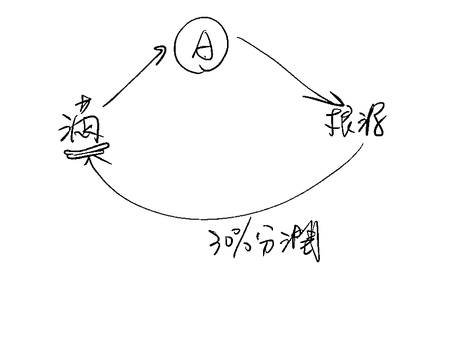

来源：https://oee5lr7gsk.feishu.cn/docx/IpwmdwCIwovTVlx13Qfc1OFTnle
全文10,581字
大约阅读时间需要10分钟
多数人好像对于副业，有一种误会，认为有副业就一定好，人生肯定需要副业。
但副业其实是一种『需求』，有些人这辈子不需要副业的，一份主业好好干，干一辈子也没问题，因为主业的钱就足够他的生活所需，那这样何需要副业。
也就是，决定要不要有一份副业，关键点在于，我的人生是否有这样的需求，得多一份副业才可以让我完成，我每个月想达到的收入目标。
现在人人都说要有副业，这基本上就是庸人自扰，喊爽的。
有多少人因为副业赔掉时间、赔掉金钱、甚至赔掉健康。
尤其副业是微商或者直销，加入的门槛多少都得先有点消费，买个小套大套之类的，未来还有晋升、囤货、……，这一类的事情。
可能光一个副业，起初就得花掉你超过一个月的薪水，这时候都还不谈有没有收入的问题。
经营客户、上一些付费课程、新产品买来试用、请客户吃饭…..，这些所有行为都得付钱，副业哪这么容易。
一般来说，不是因为『需求』驱动，很少人能够『坚持』副业初期的困难以及辛苦。
找副业的人分为两大类：
有超过90%以上的人，找一份副业为的都是『逃离痛苦』，
因为主业太无聊了，每天都干一样的事情、生活圈也没法扩大、主管天天念同样的事情、……。
这样的生活持续一辈子太悲催，不得找一份副业，让自己透口气，
可以多一个不同环境来让心情开心，远离主业的痛苦。
只有很少数很少数的人，找副业是为了追求快乐。
我有远大的梦想、
我有自己的兴趣、
我有更大的赚钱动力、
…..
做副业使我开心，能让我更接近梦想。
这一类『追求快乐』的人少之又少，如果你刚好是这一类的人，那一定要好好的珍惜自己的追求快乐，这很难得。
第二个误区是，有多数人认为有副业会更好，甚至是自由职业、创业会更好。
会说这样话的人，肯定是没创过业、没当过自由职业者、没脱离上班族一个人干点事情。
这可比上班族辛苦太多太多太多太多太多太多太多了。
上班族，是唯一的一份，只要公司录用你，不管你干的好与坏，每个月时间到了，银行卡就固定会有一笔『薪水』进帐。
但自由职业者跟创业，这可完全不一样，不干就没钱，干错还赔钱。
在不熟悉创业、自由职业的状况下，贸然的进场就是死局，初期每天光是『慌』就足够你喝好几壶了。
我常说，上班族认为自己的人生是黑白的，殊不知一离职跑去创业，这人生就全黑了。
那要怎么检测自己，适合有一份副业、
或者是，适合当自由职业者或者创业呢？
最好的方式就是，
在有主业的状况下，先用下班时间找一个简单的行业，尝试的进行。
如果，在这样的状况下，连尝试进行都不愿意投入太多时间，也常常爱做不做，
那我就不建议这样的人离开上班这个岗位。
因为觉悟不到，人生也没有到需要副业的需求。
我遇过一类人，下班后距离睡觉只剩三个小时，
这每天下班都放弃社交，认真的打拼副业，就为了人生可以多一条出路，
另一部分就是没有这副业的钱，生活就过不下去。
这类人就很适合有副业，
甚至当副业的薪水超过主业的两倍半年以上，就具备全职做副业的资格。
如果，你真的想要人生多一份收入、或者是想让自己拥有一份副业，可以用以下几个方式来检视自己。
细节先不深论，但这几个检视的方式，如果你想认真开启副业，挺值得参考和比对的。
既然叫做副业，就代表这是个『次要』的事情，
既然是次要，就不能放弃主业直接全职做副业
其实在前面，我也有提到，
副业顺利发展，就是得有一个稳定的基础。这个基础就是主业的收入。
你知道为什么很多的人，他们只想做副业，结果做了副业之后，副业做不好，
因为他们主业没有钱，他们的生活根本就不稳定。
也就是一个人当生存搞不定的时候，谈成长都鬼扯，这是骗人。
这个就是生存。
也就是你一定要把生存（主业）跟成长（副业）独立来谈。
一份主业在你的副业没有稳定之前，主业就是你人生应该要做的本分，
除非你家里有矿，你家里有钱，那这个事情你就当我没说过，
但如果你的人生并没有一个这么好的底子，或者是家庭有这么好的基础，一定要有一份主业，
因为这个是本份之内，可以让你维持一个稳定现金流的工作。
这个工作我压根就不谈你们兴趣，我不在乎有没有兴趣，
本份的工作我都不在乎你做的过程，你是不开心干嘛的？我这个事情我也不在乎，
因为钱这个东西是这个社会一个很重要的一个基准衡量，
当你没有稳定现金流的时候，你的副业也会做得不踏实。
很多人主业副业一起做，他副业做得不错的，
但当他主业一离职，他的副业就做不好了，
因为他没安全感，原本有主业的钱去支撑，他副业没赚到钱也没有关系，最少再怎么样，我主业都能有钱进来，
但当你的副业没有那么稳定的时候，主业的钱又一停止，这件事情就瞬间崩盘了。
除非你有一个很强大的意识，就是那种不管怎么样我都得突破这一关。
那假设你真的觉得自己想要全职做副业，也不是不可以
但在开始之前，你一定备好足够的存粮。
因为如果说当你的现金流瞬间停止的时候，你的副业做起来是会更吃力的，因为你会有恐惧感，
但如果说你的存粮足够，做副业过程，你会没有那种紧迫感跟恐惧感。
因为以前我都是带团队的，所以我善于说服别人放下主业跟我干，哈哈，
我曾经有过很多的年份都在干这件事，但后来我发现我错了。
这样子的做法是不对的，
除非你有觉悟。
如果不是全职做副业的方式，
想做好副业，在主业的半年就得想尽办法留出时间，
这个时间是每一天最少都得给，都得挪个 3 个小时以上，在你的副业上面，
最少，我谈的是最少，这个才叫付出代价，那如果说那天是熬夜班，那你可以那一天不做
也就是你一周，你最少得空出个 4 天到 5 天，给出 3 个小时在副业上面，
在副业的学习上面，在副业的培训上面，这是你需要做的，
如果这个东西你能够给得出来，那半年之后你就可以有底气地尝试把你的主页放掉，这个是没有问题的，
因为副业想要来钱，三个月练习一个，赚个几千块，我觉得这都不是一件难事。
不难的。方法很多，技术很多，包含这我都知道该怎么教，所以这个事情不担心。
很多人都会说，我觉得我的主业不好，我想找副业，但是这个问题是想第一步。
他没有想第二步，就是如果说我真的觉得主业，它阻碍了我副业的发展，
这份主业他阻碍了我人生未来变得更好的发展，我想放弃他
但是他们不会去思考：
我认真地发展我的副业，很少人愿意付出这样子的。
记得我曾经跟一位咨询者聊到这个话题
那咨询者因为主业经常上夜班，下班后身体很不舒服，想要直接放弃主业开始副业。
我当时就问：
如果是你觉得，在目前主业依旧在持续进行的情况之下，
因为必须要有收入，所以你的主业你可能还得再坚持个一年，你认为这一年你能够多给出一点时间，在你准备想进行的副业上面，你是否愿意多付出一点代价？
如果愿意的话，那头疼就是代价、身体不舒服就是代价，这是代价。
或者是我觉得我的时间不够是代价，或者是我觉得我很累是代价，这个都是我想转副业必须得付出的代价。
因为我有两个孩子，然后我们家目前的主要的经济支柱是我，
工作也累，但是工作累跟我要维持这个家每个月需要的生存，你觉得这两件事情冲不冲突？
我想休息，那我又要赚钱，冲突吗？
想再多赚一点，代表什么？
是不是我得再多花点时间，对不对？
那我多花点时间是不是代表我在家庭的时间我就得被压缩？这个逻辑没有毛病吧？
因为代价这些我不思考，
我一直觉得每一个做副业的人，第一个最核心的点，还是怎么让你的销售能力可以提升。
因为任何副业都离不开跟人发生商业行为，也可以说是买卖关系。
所以销售这件事在副业过程中，基本上可以说是一定会发生。
只有这个能力提升，你才可以在副业里面做得顺风顺水，不然很难。
销售能力最终还是要回归到
我怎么让沟通变得更有价值，
怎么让沟通变得更有效益，
怎么让沟通变得更明确，
怎么让沟通可以让别人感觉我是有价值的，
……
这个都是在销售的过程中，我们必须得学的，也是在销售的过程某一种技能之一。
所以，这个能力就一定得花大量时间培养，这是最关键的。
其实我遇到不少咨询者，谈到副业的时候，更多会去说困难
但我其实会有一个不一样的思维
因为所有的项目，它一定能可以做到一个基本值，
因为这个项目之所以可以普及，一定是有人把这个项目做得不错。
但是多数的人想要让自己转型的时候，都是因为我觉得原先的项目遇到了瓶颈，
但他不会思考我怎么去解决目前的问题，我怎么去让现在现阶段的事情先扩大。
因为如果任何每一个副业，你都只能把副业做到一年赚个5万或者 10 万，
我可以保证你换下个副业，你依旧只能做到5万或者 10 万
因为这跟工作内容没有关系的，是思维问题。
也就是思维格局只到5万到 10 万。
如果你思维格局能够到 20 万、 30 万，任何副业你都会知道怎么做到 20 万到 30 万。
如何透过副业提升收入，其实有两种问法
⭕️一种是
我要怎么样才可以赚钱？
⭕️但是转换一下思维，就是
为什么我赚的钱比别人少，我一定少做了些什么？
第1个问题，你以钱为关注点，
第2个问题，你以自身为关注点，这是完全不一样的。
你知道 30 万以内的人，一年年收入 30 万以内的人，
只要赚钱赚得少，都只会有第一个改进点，
就是我觉得我不够努力，我觉得我工作时间不够长，
他们总认为我再努力一点，工作时间再长一点，我再勤奋一点，我的收入就可以突破 30 万。
但是不是的，收入从 30 万突破到 50 万，跟努力压根没任何关系，你不用特别勤奋的，
如果我换算一下，我每一天工作的时长，可能还比一般上班族要来得更短
如果你让我算，你看我早上我一般都会处理 2 个小时的工作，晚上讲课讲 2 个小时，
中间可能会有一些零碎的处理时间，算一算，满打满算，
我一天实际在工作上的时间其实也就 6 个小时， 5- 6 个小时之间。
如果那天我线下我有朋友要见，可能也就处理工作时间，可能也就 5 个小时，
跟一般上班族比，这时间其实没有长，
可是这个就会颠覆很多上班族或者很多思维还没这么高的人的一个概念。
就是赚钱赚得多不应该更努力吗？
好像不一定，所以你的关注点
肯定不是：
我是不是要再多做什么项目，或者我是不是要再多花点时间，或者我是不是应该要再多干点什么事情。
而应该是：
会不会是我思维上少了什么东西，而导致现在我的赚钱其实没有这么的多。
这个就跟项目没有关系了，你懂这两个思维差异吗？
就像我的聊天成交课，到目前为止除了很多作业，
我可以跟你保证，对于那些太急躁的人来说，
这个课他听了会跟我说老师都在鬼扯，这东西对于我的赚钱哪有帮助，
但赚大钱需要累积，尤其我们做副业的。
你知道做副业的人，除非你是专业技术非常强的人，
或者你就是个程序员，你只需要写程序，让别人帮你卖程序就好了
所有的副业最需要的就是你得让你手边有一个关系网，
如果你手边的关系网是很浅的，你没有人际关系，你平时没有一个属于你自己的私域。
那你的副业开展起来就不太容易。
很多人都觉得做副业，做自由职业者很轻松，很自由
但我其实想说，这种自由和轻松的代价，就是你得有足够的自律度。
不然自由职业这件事，你肯定很难做好。
我自己的状况是，
我没有公司，我不是个上班族，
我的工作，我得自己找客户，我想卖什么产品，我想卖什么课程，
或者是我想卖我自己的课程，我要做的事情，就是我得自己研发课程，我得自己找客户，
我有了课程我得自己卖，那卖的人是谁？我得自己找。
然后社会需要什么，我就得学一点什么，
社会流行什么，我就得接触点什么，
这是我的工作形态，那相比之下，你觉得这样子的工作会比较难，还是上班族的工作会比较难？
肯定是上班族比较轻松。
但如果说你只是想当一个月赚个五六千的自由职业者，那可能你的工作会比项目组来得更轻松。
我一直定义副业这个角色，
那觉得你已经习惯性就是有了一份稳定的工作，你突然这个工作你就离职了，我们想象个场景，这工作你突然离职了，你跟自己讲，不行，我目前没收入了，怎么办？我决定要去认真干一个副业，那半年的过程你会快乐还是会痛苦
咨询者：会痛苦，我会很有很焦虑，很有压力，非常焦虑，包括我现在都很焦虑。
很多人心血来潮辞职做自由职业，
刚开始你会有一点点的快乐，那个快乐来自于，
诶，我的人生出现了新鲜感，
我终于放下了那个我最不想干的工作，
我终于可以不用半夜，我还得在公司上班，也会有一点点的快乐，
但是快乐半个月之后诶你就发现
诶，糟糕，原来我除了不用熬夜之外，其他东西都变惨
以前最多只要熬夜或者面对枯燥的工作，诶，其他都挺不错的，
现在是除了熬夜没有以外，其他都变得很惨，
因为你每一天你得规划你的行程，你得学新的技能，
你得跟上新的老师给你出的作业，你得打卡，你得找客户，你得持续地精进，
你还得持续地花钱，可是你持续地花钱却没有一个稳定的现金流，
让你在花这笔钱的时候，可以有东西去补上你花掉的那个坑。
我觉得做副业的人，和上班族有一个挺大的不同
就是上班我只要把老板给我的工作完成，做完我到时间就能拿钱
那副业或者自由职业者，会完全不同，就是要达到什么样子的收入，要如何做事，都得我自己来规划和执行
所以，当你决定要进入副业了，
我要给自己设定什么样子的年度目标，
以及设定什么样子的每日行程
这是非常重要的一件事
我这么讲吧
我刚开始到杭州的时候，我要找房子，我第一次把58同城打开，我差点懵了
踏马的，我要找房子，结果一打开，十几万个房源，怎么找呀
我不知道怎么找哎，杭州这么大，什么地方的都有
后来我就开始锁定了，找萧山
然后那时候我跟我的朋友一起来，跟我的组员一起来，
不只找萧山，我还得找四房以上
我当把全部的限制条件放上去以后，
我发现整个萧山，我能找的房子，只剩三间
有没有发现，我就能够很精准地知道，我要去什么地方看房
所以我就用一天时间去找房，
然后付好了押金，那一天晚上我们就住进去了
我就只用了一天的时间
那如果我可以很清晰地知道，
就是当你的副业，原本只是要平均赚到1万~3万的时候，
但是呢，你准备要全职做副业，你设定的目标却是你原本要赚到的钱的两倍，或者两倍以上
那就代表，你的能力得提升两倍，你每天的聊天的人的数量得超过原来的两倍以上
是的，我们用「量」去衡量最快
假设你这半年完全不成长，
你的成交率不变的情况下，你能做的只有增量。
只有增量，那你给自己做好增量的准备了吗？
增量就是增加时间
这是很直观的呀，就是在能力不变的情况，
我能做的就一件事情，把我的时间增加
增加大量的时间，去塞满我的副业需要完成的点。
因为只有这样子的目标设定，才能让你从主业这个范围离开的当下，你心里面不会觉得慌张。
这件事情太重要了，这是很多人，从主业换到自由职业者的时候，没有准备好的一个重点
这东西只要没有准备好，那就只有死路一条
副业是一个复合式的技能，你只会专业，副业干不起来的。
做专业，你觉得你不会推广，那有用吗？
没用的，所以副业不能只有单向式地学，
所以我才说，老师要慎选，你不能选一个只会专业的老师。
这老师要知道怎么教你推广，教你曝光，怎么教你去介绍自己，这是老师需要做的事情，如果找一个老师都搞定这些了，那就找一个就好了，那如果发现这个老师解决不了，但他专业我喜欢，那你就找两个老师。
就假设做知乎好物
知乎好物要不要写文章？
要不要学会怎么看数据？
要不要学会产品？
那会不会有人来找你？知乎你的粉丝量多不多？关注量多不多？为什么这文章多人看？这文章少人看？
这个你觉得要练吗？
需要，你得对这个有敏锐度，对不对？那你觉得这件事情是专业赛道，还是推广赛道？
如果说你在学专业的过程，你专业学了 3 个月，会不会你同时又具备了推广能力？
会呀，所以副业这个东西本来就都要会，因为副业没有人给你工作，你的工作就是多样性的。
为什么主业能如此稳定，时间到就有薪水能领？
因为
时间到你就得打卡
时间到你就得工作
时间到你就得交付任务
……
但多数人进到了副业，
因为自由度突然提高，七点起床就变成十点
起床后工作，就变成起床后先玩个几小时，甚至都忘记工作
如果开启副业，可以给自己设定一个时间段
每天九点到十二点，每天下午一点到三点，都是我的工作时间
这个时间段我只能工作
也就是，当你准备要开启一个副业时
可以做一个练习
每天下班后，最少挪出两个小时（含以上）
做一点副业的前期预备工作
如果能坚持三个月以上，都想办法每天挪出两小时
这就是一个我准备好做副业的标准
因为这两个月，已经能让自己在固定时间，就干固定的事情
一个新习惯是否能快速养成，有个很重要的因素
就是，能不能找到相对应的圈子
就举例
一个有加入生财的人，跟一个没加入生财的人
同样两个月过后
哪个人会对副业有概念？
哪个人会对副业有想法？
必定是第一个——加入生财的人
因为有了这样的环境
就会让一个人的思维中，增加了过去不曾有过的习惯
不只增加，还能因为环境的因素，让这个习惯加深、并且内化
人会有种习惯——排斥自己认知以外的事情
应该说，对自己熟悉以外的事情，有『批判』、『封闭』
批判，就是一种丧失好奇心的表现
我是个做房仲的，别人找我推销保险，我第一个就先排斥，
干保险不好，房仲是全世界最好的；
我是做实体行业的，有人找我了解互联网，我第一个就先排斥
互联网不好，就应该干实业；
这是多数人，习惯性的『第一』反应
很多时候，就因为这样的反应出现
就把一个新讯息
或者把一个新朋友
或者把一个新趋势
……
快速屏蔽掉了
副业，不就是为了让自己，有更多元的收入，有更开阔的眼界吗？
有部分副业，参与的开始都要付出一点『资金』
可能是代理费
可能是学习费
也可能是买产品的费用
.........
除非早就家财万贯、或者家里有矿
不然，我会很建议
可能是几千元
也可能是一万元、两万元
想要让自己开展副业
花的钱只要超过设定的数字，我就不再花钱（并不是放弃副业）
有太多，明明干主业还能有点存款
结果半年的副业，就把过去存的钱都赔光光，还没有获得新的现金流。
副『业』，这个『业』代表事业的意思
既然谈到事业，那就一定跟收益有关联，想想有谁做个事业，会不设定营收的？
所以，副业之前一定要给自己设定一个『营收目标』
可能是
一个月变现一千元
一个月变现两万元
三个月内变现五万元
……
只要没有设定收入目标
多数的副业，就很容易不小心陷入『只学习』的陷阱
花钱进入某个群，也只能是学习，但不是副业
所以，没有设定收入目标，就只能是学习、但还称不上是副业。
既然是副业，就代表跟主业会有些『区别』
与其，在原本有的圈子里面，找新的客户
还不如拓展新圈子
这样的话，名单还不会跟主业有重复，
也不用有担心，这人会不会因为我推荐副业，就觉得肯定是主业干不好
同时，持续的新名单
也能让副业的思维还有领域
能因为人数的增加，持续扩张
对于这事情，我有一个标准
这是一个最基本的数量
感觉人好像不多
但一天10个，一年下来就可以有三千多人
这是一个很可观的人数
不建议让自己『过于频繁』换赛道
一个副业的参与，最少都得做三个月以上
才能真正的评估，这事情到底适不适合我
我有很多副业相关的谘询
谘询者都是
老师，这副业我做了十几天，都没变现啊！
你帮我看看，我的性格，换什么副业会更好
做一个新副业，想要短短几天就变现
这是一个相当有难度的事情
事业的关键
都不是事业的本身，而是做副业的『人』
所以选副业之后
开展副业，不就为了要让自己多点收入吗
获得收入的前提，付出代价是必然的
千万不要做了副业后
就天天把『我没有时间』、『我時間不夠』這樣的话放在嘴边
因为放著放著，你就会真的没有时间
同频相吸
很多时候，就是因为这些随口的语言习惯
让你身边，都只会吸引到这些，也没有时间的人到你的世界里
想想，新名单如果都是这群人
那副业开展很困难，总认识不到一些更棒的人
这也是很正常的
多把『我没有时间』换成『我想办法完成』
这会让副业的开展顺利很多
如果我只是用副业的心态面对
那最终的结果，只呈现出副业的成绩，那也是很正常的
主业副业，我只会用时间来区分
时间花的多，就暂时当我的主业
时间花的少，就暂时当我的副业
但不能因为这是副业，我就只用副业心态来面对
关于副业的方向，我一直建议，先从轻资产的副业开始。
你想什么时候开始其实都行，因为副业本来就没有时间限制。
尤其一个副业真正的关键在于一个人能不能够妥善地运用自己的时间。这是自由职业者最必要学的内容，就是我要如何妥善运用我的课余时间。
CPS 其实是一个很好启动的项目。
如果你想做副业，做 CPS 叫分销，我卖别人东西，我有佣金。
我的销售课，我的课程其实是有 CPS 的。很多人卖不好的原因只有一个
应该这么讲，要能够把 CPS 做好的人，他必须得有一个很关键的点，
多数的人都没有做到服务。
我画一张图好了。

今天这个是我的一位学员。这个是根源，学员推荐了他一个朋友A，买我的课。OK？
这个过程是不是买完之后诶我就可以给学员一个 30% 的分润？
这个没问题吧，这个就是一个 CPS 的概念，对不对？
赚钱模式其实是非常非常好的。尤其涛哥也提过万物皆可CPS。
但是做不好的原因是因为，学员把这个课程推给A的时候，A跟我买单的那一刻，学员就不再服务他了。
学员会认为我拿到了30%分润，我已经拿到分润了。
既然拿到分润了，就给根源老师好好服务就好了。
如果学员跟我的关系不是很好，我在服务他的过程需要跟学员汇报吗？我不用跟他汇报的。
因为如果我认真服务好他，结果他跟我买的第二次的产品，他又持续地购买了。
这过程我需要跟学员报告吗？
不需要。因为学员这过程完全没有服务A，完全不服务的。
所以 CPS 很多人做不好的原因只有一个，当他把我推荐给A的时候，这一次他就认为我们的服务已经中断了。
反正A已经归老师了，对不对？多数是这样子的。
所以 CPS 最好的点就是
今天 CPS 我做好之后，我必须得好好地去服务我的客户。
也就是这时候，我会建议，假设你真的想做分销，想做别人课程的分销，
你最好卖这个是你听过的课，甚至这个课程你在里面。
这个非常非常的重要。
所以，如果你真单纯只是想赚钱，去做 CPS 就好。
但是这是一条比较短的路径，这是个短期赚钱的路径。
因为 CPS 是一个最好在服务的过程，让你自己从卖别人的产品的过程，同时会出自己的产品。
但是哪一种东西的投资，我认为最有效益？混圈。
先混圈混一年或者混半年，卖 CPS 跟混圈可以同时进行，因为这两件事情不冲突。
这个是三个，如果你想要冷启动副业，我觉得最轻，你完全不用花钱的方式。
如果你混圈，你得花点钱，像什么 99、199 这种越便宜的你都入，
找几个你觉得感觉好的，或者是你找 3 个，认真在里面回答问题，认真在里面跟所有人聊天。
很多人对于副业都会有一个误会，就是我必须得能力很好，我必须得有定位，有方向。其实不是的，完全不用的。
因为你要想一件事，我就这么讲，如果你单纯只是学了某一个课程，你在课程上抄笔记，你觉得这件事情是有产值的事情吗？在没有互联网的时候，这件事情就是我在家写开心，对不对？但如果在这个年代，你具备一个整理笔记的能力，你觉得这个能力能不能够帮你换到一点钱？
客户：
嗯哼。
我认为是可以的，因为年代不一样。现在很多笔记侠，他的工作就是负责写笔记，拿出去卖，负责写笔记，甚至跟人家分享，你们来看看我每一天学习写的笔记，我一天写半小时，我今天工作就是把我的笔记分享出去，我可以做一个围观群，我可以收 19. 9。也就是：
我们要真的进入到副业的关键都不是你能够拿出什么东西，也不是你的能力有多好，而是你敢不敢开口跟别人收钱。
这全部是谈业务能力，副业的启动全部是业务能力，跟会不会做课没有关系的，真的。很多人都以为会做课才能启动副业，都骗人的，敢收钱才可以启动副业。
很多人可能会觉得副业是在卖内容，比如专业知识、商品……，这一点我不否认
但我想跟进一步谈的是，副业其实卖的是自己。
也就是只要我跟对方有足够的信任，我才有机会把东西卖出去，以及把这件事做大。
就比如我好了
我得尝试介绍自己，哇这个太难了，我跟别人比，
我就是赤裸裸的自己，我没有公司背景，
我跟他介绍，我觉得我很棒，我觉得我怎么样，我觉得这个课很棒，
别人说你的依据是什么，你说不出依据的，
因为副业就是把自己卖出去。
我得透过各种各样的方式，跟对方建立信任。
这也是我觉得副业以及建立个人IP的关键。
我把人分为两类：
⭕️第一：梦想驱动
我可以为了完成某种理想，而牺牲我的下班时间、工作时间、甚至是双休放假时间，只为了达成五年后、或者十年后的目标。
举个例子：
我是一位工程师，但我的理想是当一名作家，这两件事情，在工作的类型上其实相违背。
工作又忙，每天回到家都快12点，早早也得出发到公司上班，但为了作家这个梦想，我每天能提早一小时起床，日更完再出门上班，连续几年都这么做，没有任何人逼迫我，我还能很享受这一小时的时间。
类似这样，就属于梦想驱动，但这一类的人少之又少。
⭕️第二：生存驱动（也能说危机驱动）
我做的所有一切，都是为了满足生存条件。
（我用生活费举例，你能比较清晰一些。）
每个月我的生活，需要一万块才够我运转，刚好，我选择的工作底薪加上提成，每个月固定能有一万块。
这时我告诉自己，我得未雨绸缪，找一个副业，不只能增长见识、還能多一点收入存点钱。
但，当我下班的时候就想休息，就想看电视、就想啥事都不干。
因为想多赚钱是梦想、但是每个月的薪水，已经能完成我『当下』的生存，所以副业肯定启动不了，主因是动力不足，只有生存驱动而没有梦想驱动。
说更直接一点，不干副业也没事，生活依旧能过的凑合。
以上是思维的部分。
难道没有梦想，生存驱动就无法让你继续往前走吗，提供给你几个不错的方法。
可能是买台车、可能是买套房子，
因为多了这些事情，你就得付房贷负车贷，这是一种透过外力增加生存，让你能更有动力。
当然，你也能选择生个孩子，假设已经有了，哪就再生一个。
这环境的人可能是大家都有副业、可能是大家天天都认真的逼自己做点不同的事情，
能透过环境渲染，让你跟上环境，就可以让『进入状态』这件事情拉长时间。
因为你的关键并不是不做，
而是一堆外力，让你做的持续时间太短，
不用一次到位，只要随着日子的增加，让你做副业时间也一点一点增加就好。
每天十分钟关注副业，一直到每天能有二十分钟、三十分钟、.....这都是一种进步，虽然缓慢，但胜在匀速前进。
人是这样的，当你花的钱多，不干事情就觉得心理过不去，
再者，有个人一对一的在旁边叮着你，能增加你做事情的时长。
这三种方式提供给你，这也是我个人亲测过很有效的方式，希望对你有帮助，欢迎追问。
我是根源，同时也是第四期的生财圈友
一个有 2w+ 实战案例的心理咨询师
12年线下销售、团队管理经验。
2022 年开始转型线上，做一些知识付费的项目。
过去曾发表过几篇文章
都能看到这，代表你对文章的喜爱
肯定有一定的程度！
也欢迎阅读过去我写过的历史文章。
2021年的文章（精华x1）
2022年的文章
2023年的文章（精华x6）
多亏加入了生财有术
让我少走了很多弯路。
也积累了一些经验、心得
如果圈友有什么需要探讨的
欢迎加我微信「 AF54094 」交流~
▲
也能扫码撩我~